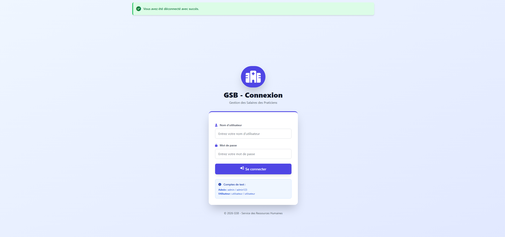
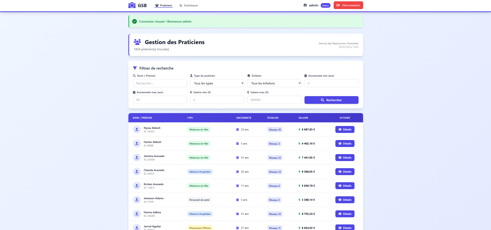
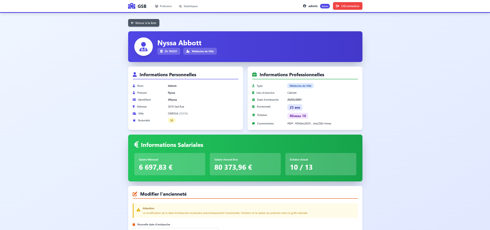
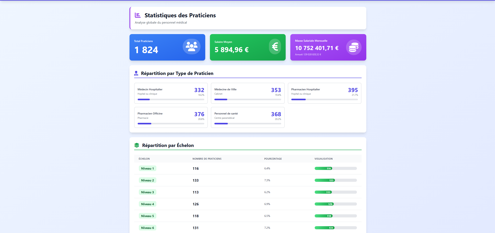
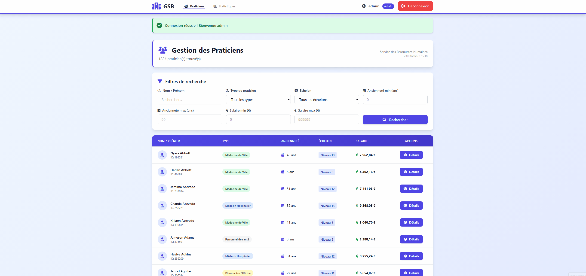
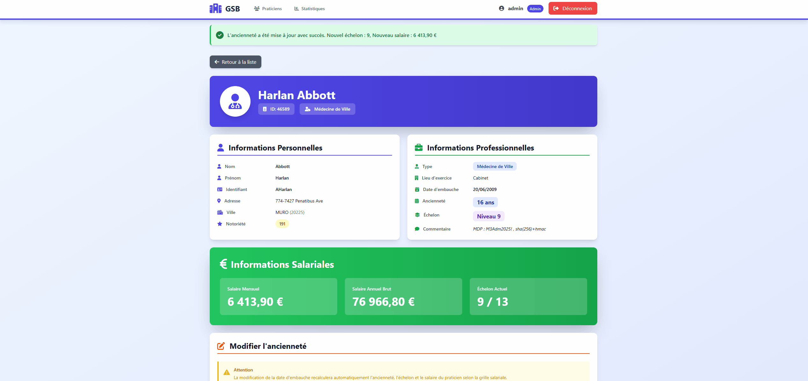

Gestion des salaires
Application web Laravel de gestion des salaires avec dashboard temps réel, calculs automatiques via triggers MySQL, filtres de recherche avancés, statistiques et gestion des rôles utilisateurs.
Captures d'écran




Démonstrations


Ce que fait l'application
Authentification & rôles
Système de connexion sécurisé avec gestion de rôles — accès différencié selon le profil utilisateur.
Dashboard temps réel
Vue centralisée des données salariales — indicateurs clés, totaux et alertes mis à jour dynamiquement.
Fiche employé complète
Consultation et modification des informations salariales par employé — historique, primes, retenues.
Calculs automatiques via trigger
Trigger MySQL déclenché à chaque modification — recalcul automatique du salaire net, cotisations et brut.
Filtres & recherche avancée
Filtrage multi-critères en temps réel — par nom, département, tranche salariale ou statut.
Statistiques & graphiques
Visualisation des données salariales — répartition par département, évolution, masse salariale globale.
Schéma — GSB_total
praticien
Table
idint PK
nom / prenomvarchar
date_embauchedate
ancienneteintcalculé auto
echelonint DEFAULT 1calculé auto
salairedoublecalculé via trigger
code_type_praticienvarchar FK
type_praticien
Table
codevarchar(6) PK
libellevarcharex. Médecin Hospitalier
lieuvarchar
typevarchar(1)H / V / A
grille_salariale
Table
idint PK
code_type_praticienvarchar FK
echelonint
anciennete_min / maxint
salairedoubleex. 4 633 € → 9 368 €
trg_praticien_insert / update
Trigger
BEFORE INSERT / BEFORE UPDATE sur praticien
Consulte
grille_salariale selon le code type et l'ancienneté — met à jour automatiquement echelon et salaire sans intervention manuelle.
sp_update_all_salaires
Procédure
Recalcul global en masse
UPDATE sur l'ensemble de la table
praticien via JOIN grille_salariale — synchronise tous les échelons et salaires en un seul appel.
Relations
praticien.code_type_praticien → type_praticien.code
grille_salariale.code_type_praticien → type_praticien.code (CASCADE)
Technologies utilisées
PHPLangage backend
LaravelFramework MVC
MySQLBDD & triggers
API RESTÉchanges données
Git / GitHubVersioning
Ce que j'ai appris
Triggers MySQL
Concevoir et déboguer des triggers pour automatiser les recalculs salariaux a été la partie
la plus technique. Comprendre l'ordre d'exécution et les cas limites m'a demandé de nombreux tests en base.
Filtres dynamiques sans rechargement
Implémenter des filtres réactifs côté frontend communiquant avec l'API REST Laravel a nécessité
une bonne gestion des requêtes asynchrones et de la pagination côté serveur.
Architecture MVC avec Laravel
Ce projet m'a permis de consolider la maîtrise du framework Laravel — Eloquent ORM, middlewares
d'authentification, ressources API et séparation stricte des responsabilités.